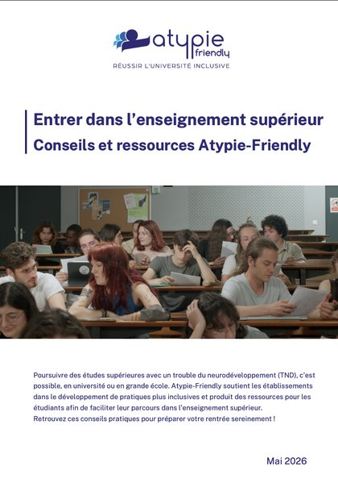
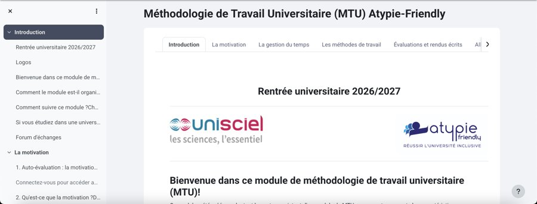
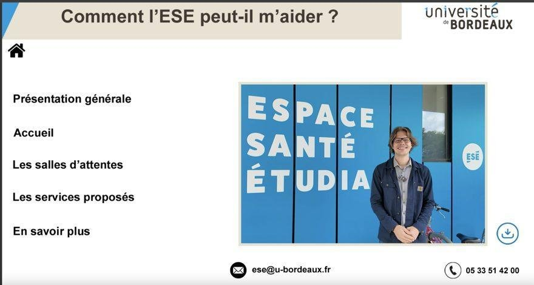
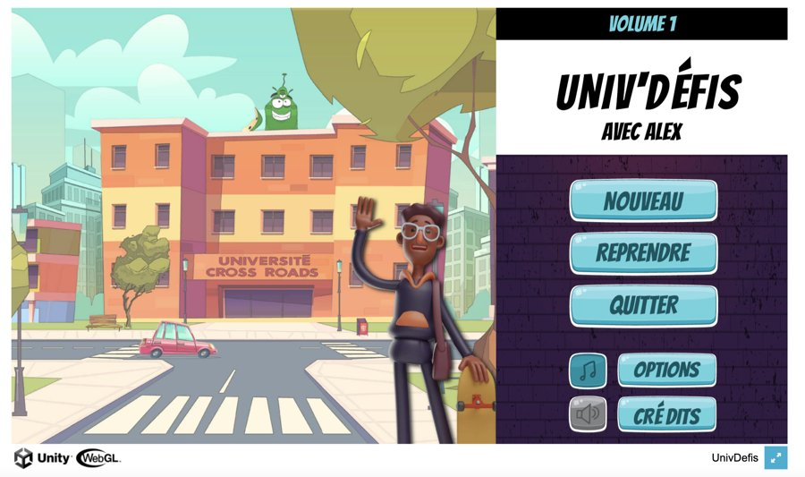

La rentrée est là, et avec elle son lot de nouveautés et de questions. En lien avec les services spécialisés, Atypie-Friendly est à vos côtés pour faciliter l'inclusion universitaire des étudiants et des personnels présentant un trouble du neurodéveloppement (TND). Que vous soyez concerné, proche ou membre de la communauté universitaire, voici six ressources concrètes pour aborder cette rentrée en toute sérénité.
Bonne rentrée à toutes et à tous ! Rappelez-vous : tous les nouveaux étudiants se sentent un peu perdus au début. L'université est mobilisée pour vous aider.
Webinaire Atypie-Friendly
Mardi 3 novembre 2026, de 12h30 à 13h30 · En ligne
Vous avez un trouble du neurodéveloppement (TSA, TDAH, troubles dys…) et vous vous sentez parfois seul face aux défis du quotidien universitaire ? Vous souhaitez mieux comprendre et soutenir vos camarades ou vos collègues ? Inscrivez-vous à notre prochain webinaire, ouvert aux étudiants et aux personnels de l'université.
Au programme :
- Présentation des avancées du programme local Atypie-Friendly et des ressources disponibles (20 min)
- « Comment lutter contre la discrimination des personnes avec un TND à l'université », par Camille Mazouffre, doctorante en sciences cognitives et membre d'Atypie-Friendly (20 min)
- Temps d'échange en direct avec l'équipe Atypie-Friendly pour poser toutes vos questions, sans filtre et sans jugement (20 min)
Atypie-Friendly à l'université de Bordeaux
Dès votre arrivée à l'université, ou même avant votre inscription, vous pouvez prendre contact avec l'équipe locale Atypie-Friendly, qui se mobilisera pour répondre en complément des services spécialisés.
Le guide de rentrée : tout anticiper, étape par étape

Pour aborder l'enseignement supérieur en toute sérénité, nous mettons à votre disposition un guide : « Entrer dans l'enseignement supérieur : conseils et ressources Atypie-Friendly ». Il rassemble en un seul document toutes les clés pour préparer et réussir sa rentrée.
On y retrouve notamment : la prise de contact avec l'équipe locale, les aménagements possibles, les pré-rentrées d'informations sur l'université, les sensibilisations sur mesure auprès des enseignants et étudiants, le module MTU, la vie quotidienne, les stages, le soutien entre pairs (Cafés Atypie, ateliers d'habiletés sociales, associations)… et bien sûr le mémo de rentrée, qui peut constituer une aide précieuse avant la rentrée, dès l'admission et après la rentrée.
Le module MTU : réussir sa méthodologie de travail
Le module de Méthodologie du Travail Universitaire (MTU) est une ressource en ligne, gratuite et en libre accès. Pensé en tenant compte des particularités des étudiants autistes, il est utile à tous les étudiants, neurotypiques ou non.
Ce module aide à construire des repères pour organiser son travail personnel, autour de cinq parties : la motivation, la gestion du temps, les méthodes de travail, les évaluations et rendus écrits, et il propose des ressources pour aller plus loin.
Chaque partie prend 15 à 30 minutes, avec des mini-tests d'auto-évaluation, des exercices et des fiches-conseils. Un forum de discussion est à votre disposition, et l'équipe locale peut aussi vous accompagner si nécessaire.

Les ateliers d'habiletés sociales en ligne
Incompréhensions, difficultés à alimenter une conversation, à percevoir les codes sociaux ou les attendus implicites… Certains étudiants rencontrent des difficultés dans leurs interactions sociales à l'université. Dans ce contexte, un cycle d'ateliers d'habiletés sociales en ligne vous est proposé.
Quand ? Les jeudis de 17h30 à 18h30, en distanciel. Les dates sont les 8 et 15 octobre, puis les 5, 12 et 26 novembre 2026. Il est recommandé de suivre l'ensemble du cycle.
Afin de maintenir la qualité des ateliers, le nombre de places est limité et implique donc une inscription via le formulaire en ligne ci-dessous. Cette inscription ne vous impose bien sûr pas de réaliser l'ensemble des ateliers, même s'il est préférable d'y assister dans leur entièreté. Une fois l'inscription validée, le lien de connexion est envoyé par mail quelques jours avant le premier atelier.
Les visites virtuelles : découvrir les lieux avant le jour J
Vous souhaitez prendre contact avec le service PHASE ou l'Espace Santé Étudiants, mais aller dans de nouveaux lieux et rencontrer de nouvelles personnes n'est pas si facile. Deux visites virtuelles de ces deux services de l'université de Bordeaux vous sont proposées. Vous pourrez y repérer les lieux, savoir à quoi vous attendre et identifier les personnes-ressources, grâce à des mises en scène avec les personnels.
L'Espace Santé Étudiants (ESE)

Univ'Défis : la vie étudiante en s'amusant
Et si on découvrait les défis de la vie universitaire de façon ludique ? Univ'Défis est un jeu sérieux (serious game). Aux côtés d'Alex, le joueur explore des situations concrètes de la vie à l'université et apprend à les appréhender en douceur.
Un format immersif et bienveillant pour se préparer autrement : se repérer sur le campus, gérer les imprévus, aller vers les autres… Autant de situations abordées sans pression, à travers le jeu. Une manière originale et rassurante de mieux appréhender la vie étudiante.
